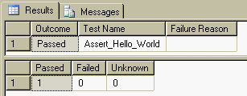
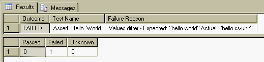
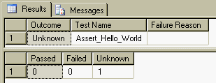

SS-Unit is a unit testing framework for SQL Server (i.e. T-SQL). It comprises of a set of stored procedures that allow you to write unit tests for your SQL objects and code in T-SQL itself using the familiar xUnit model.
For a little more rationale around why you might choose to unit test your SQL code this way rather than through, say, your back-end services see my blog post Blah, blah blah.
The easiest way to see how SS-Unit works is to look at the examples which are
contained in the SS-Unit\Examples folder. The *.dbo.sql
files are intended to represent the production code and the *.test.sql
scripts are the unit tests. You can run the examples either in batch mode (just
as your build server would) this way:-
C:\SS-Unit\Examples> BuildDatabase .\SQLEXPRESS C:\SS-Unit\Examples> RunTests .\SQLEXPRESS
or you can build the example database (with SS-Unit applied) and run the unit test scripts interactively through a GUI tool such as SQL Server Management Studio (SSMS):-
C:\SS-Unit\Examples> BuildDatabase .\SQLEXPRESS C:\SS-Unit\Examples> SSMS
These batch files take the name of the SQL Server instance and assume a database name of "SSUnit_Examples". The example above shows how to access a local instance of SQL Server Express which is freely available and makes an excellent tool for developing SQL code via TDD.
Most unit test frameworks come with some sort of binaries, but because this is
SQL based it effectively comes as source code. It is intended that you apply
it to your baseline database schema and then run your set of test scripts.
There is a batch file in the Framework folder called Install.cmd
that you can use to load the test framework into any database, e.g.
C:\SS-Unit\Framework> Install .\SQLEXPRESS SSUnit_Examples
Most likely you will already have your code in some form of Version Control System and also have some tool (or batch files) to create your baseline database. Because this library comes in source form you can just add it to your 3rd party area and either use the supplied batch file or manually integrate it into your own build system.
It's assumed that you are already familiar with the xUnit testing framework - probably NUnit - but if not, then as long as you have used one of the more popular ones SS-Unit should make sense. Naturally some artistic license was required to map the mechanisms a language like C# has at its disposal for metadata and reflection onto the much simpler T-SQL world.
So, let's start with the canonical unit test equivalent of the "Hello World" program beloved by programmers everywhere:-
create procedure test._@Test@_Assert_Hello_World
as
declare @expected varchar(max);
set @expected = 'hello world';
exec ssunit.AssertStringEqualTo @expected, 'hello world';
go
exec ssunit.RunTests;
If you run this piece of code in SSMS (using, say, the SSUnit_Examples database) you should see the following output:-
The first result set shows you that you ran 1 test; it passed and was called "Assert_Hello_World". Below that is a second result set showing you a summary of all the tests you ran in that script file.
To make things a little more interesting, change either the expectation or the actual value to something different and run the test again. I changed the actual value to "hello ss-unit" and got this:-
exec ssunit.AssertStringEqualTo @expected, 'hello ss-unit';
Grrr, our first failed test! This time the outcome has changed to "FAILED" and the "Failure Reason" column is populated with a simple message that shows you why the comparison failed.
As one more final simple exercise, comment out the assert. This time the test is deemed "inconclusive" and so the outcome changes to "Unknown":-
--exec ssunit.AssertStringEqualTo @expected, 'hello ss-unit';
It is expected that all code paths should assert at least one condition to distinguish from the scenario where an assert has been forgotten.
It should be pretty obvious that tests are written as stored procedures - one
procedure per test. It should also be apparent that the end of the SQL script
must contain a call to invoke the unit test runner - at least when using a GUI
tool like SSMS to run the tests. What is probably less obvious is why there is
no drop procedure statement and why there are funny _@
characters in the name...
If you've used NUnit you'll be accustomed to annotating your unit tests with a
[Test] attribute; this is how NUnit finds your tests without you
having to register them. Sadly T-SQL doesn't support attributes and so we have
to find another way to achieve the same goal. So it uses an adornment on the
test name - _@Test@_. Hopefully the use of the '@' symbol will
make you think attribute. So these two are supposedly equivalent:-
[Test]
public void Thing_ShouldDoThat_WhenItDoesThis()
{
. . .
}
create procedure _@Test@_Thing_ShouldDoThat_WhenItDoesThis
as
. . .
go
As for why you don't need to write the usual if object_id()/drop procedure
prologue, that's because the test framework drops the procedure for you. Why?
Because unit test names should be verbose and nothing kills your flow
more than having to fix your script because you forgot to drop the proc first or
you misspelled it. This then means that you can alternate between the production
code and writing/running the tests very rapidly.
A slightly more subtle point you may have noticed is that all the SS-Unit
objects live in a separate schema called ssunit. This gives it all
the benefits of namespaces to avoid name clashes with your test or production code.
NB: This version of SS-Unit also assumes that the unit tests live in a schema
called test. The schema is created automatically by the Examples
database, but it shouldn't be necessary in future.
Due to the limitations of T-SQL not supporting overloading based on type the assert names have to encode the type instead. So far only a basic set of assert procedures have been written for the core types - integers, strings and datetimes. Given that SQL Server will do most convert type conversions automatically you can still get a lot done with just these few.
| Assert Procedure | Description |
|---|---|
| AssertPass | Denotes the test as having conclusively passed |
| AssertFail | Denotes the test as having conclusively failed |
| AssertTrue | Compares the resultant value to 1 (i.e. true) |
| AssertFalse | Compares the resultant value to 0 (i.e. false) |
| AssertThrew | Executes a helper procedure which is expected to perform the test and result in an error being thrown |
| AssertXxxEqualTo | Compares the resultant Xxx value to another for equivalence |
| AssertXxxNotEqualTo | Compares the resultant Xxx value to another for difference |
| AssertXxxIsNull | Compares the resultant Xxx value to NULL |
NB: AssertPass and AssertFail provide the underpinnings of the framework - all others are implemented in terms of these two.
You will notice that each 'set' of asserts has an explicit overload for comparing with NULL. It would have been quite easy to make the AssertXxxEqualTo procedures support a comparison with NULL, but I felt that goes against how NULL's are handled in real SQL. You learn early on that NULL can be synonymous for 'unknown' and so you never write "x = null", but "x is null". Consequently in SS-Unit you don't say "AssertXxxEqualTo null, @x", but "AssertXxxIsNull @x".
SQL Server provides a Try/Catch mechanism that allows you to use an exception
style of programming to deal with errors via the RAISERROR keyword. However,
writing a unit test to verify that an action throws can be very verbose; so to
avoid the boilerplate code obscuring the salient part of the test the
AssertThrew procedure takes an extra argument that is the name of
a helper procedure to invoke as part of the test, e.g.
create procedure test.My_Procedure_That_Throws
as
-- simulate a constraint violation
raiserror('my error', 16, 1);
go
create procedure test._@Test@_ShouldThrow
as
exec ssunit.AssertThrew 'my error', 'test.My_Procedure_That_Throws';
go
There are also two failure modes of an AssertThrew style test as
opposed to the usual one. First the helper procedure may not cause an error to
be thrown, or the error that is thrown is not the one expected - hence the
@error argument. For example, when testing constraints, it's too
easy to write a test that causes a primary key or different foreign key violation
by accident instead of the desired failure through copy-and-pasting tests.
The problem with scraping error messages to verify a test is that they are
subject to change, at least for application specific errors. And so the message
comparison is done using the LIKE operator so that you can perform
a fuzzy match. One benefit to explicitly naming your constraints is that you can
then use them as the @error message instead of something more
vague, e.g.
-- Matches any FK violation
exec ssunit.AssertThrew '%FOREIGN KEY%constraint%', 'test.My_Procedure_That_Throws';
-- Matches specific constraint violation through constraint name
exec ssunit.AssertThrew '%MyTable_FK_MyColumn%', 'test.My_Procedure_That_Throws';
This version of SS-Unit does not allow you to provide SetUp & TearDown helper
procedures. In future it will, probably using annotations like _@SetUp@_
and _@TearDown@_ but a pre-requisite for this is to be able to group
related tests via a named "fixture". It is anticipated this will also be done
using an annotation such as _$MyFixture$_.
This library is freeware - you get what you pay for, nothing more, nothing less.
Please check the web site for updates.
Email: gort@cix.co.uk
Web: www.cix.co.uk/~gort
Chris Oldwood
10th June 2011